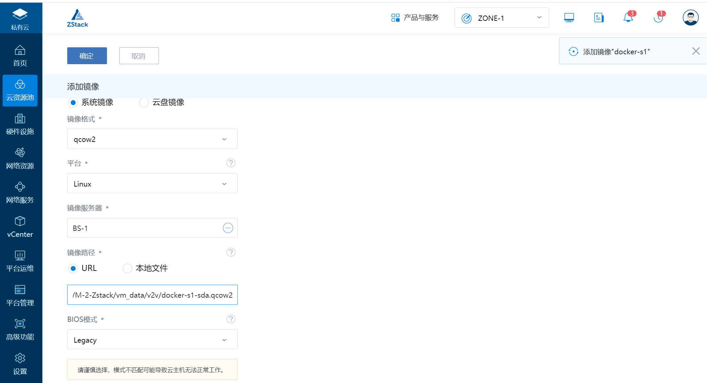

Contents
7. 镜像转换V2V¶
7.1. P2V工具¶
wget http://oirase.annexia.org/virt-p2v/RHEL-7.3/virt-p2v-1.32.7-2.el7.iso
P2V、V2V迁移总结
7.2. qemu-img工具转换镜像格式¶
https://support.huaweicloud.com/bestpractice-ims/ims_bp_0030.html
简单看看几种镜像的转化：
7.3. VMware转换为KVM¶
7.4. vmdk转换为qcow2¶
[root@localhost migration]# qemu-img info SLES11SP1-single.vmdk
image: SLES11SP1-single.vmdk
file format: vmdk
virtual size: 20G (21474836480 bytes)
disk size: 3.9G
[root@localhost migration]# qemu-img convert -f vmdk -O qcow2 SLES11SP1-single.vmdk SLES11SP1-single.img
[root@localhost migration]# qemu-img info SLES11SP1-single.img
image: SLES11SP1-single.img
file format: qcow2
virtual size: 20G (21474836480 bytes)
disk size: 3.9G
cluster_size: 65536
virt-v2v工具来做迁移，实现将VMware ESX中的一个客户机迁移到KVM上。利用virt-v2v 迁移VMware客户机的命令行示例如下：
kvm安装命令支持包
mkdir -p /data/vmfs
virsh pool-define-as vmdisk --type dir --target /data/vmfs
virsh pool-build vmdisk
virsh pool-autostart vmdisk
virsh pool-start vmdisk
创建ESXI 验证文件
vim /root/.netrc
machine 192.168.1.58 login root password 123456
chmod 0600 ~/.netrc
// 测试KVM连接ESXI
# virsh -c esx://root@192.168.1.58?no_verify=1 list --all
Enter root's password for 192.168.1.58:
Id Name State
----------------------------------------------------
1 Gitee-GO-k8s-master1 running
3 Gitee-GO-k8s-node2 running
4 Gitee-GO-k8s-node1 running
22 centos7 running
- docker-s1 shut off
// 直接迁移转换exsi
virt-v2v -ic esx://root@192.168.1.58/?no_verify=1 -os vmdisk -of qcow2 -b br0 docker-s1
// 直接迁移转换vcenter
virt-v2v -ic vpx://administrator%40vsphere.local@192.168.1.40/OSChina/192.168.1.58?no_verify=1 docker-s1 -o libvirt -of qcow2
// 如果直接迁移报错了，就需要将vmdk复制到本地进行手动转换的方式进行迁移，硬盘文件+xml文件创建虚拟机
具体实现方式如下：
// 迁移到本地
# virt-v2v-copy-to-local -ic esx://root@192.168.1.58/?no_verify=1 docker-s1
% Total % Received % Xferd Average Speed Time Time Time Current
Dload Upload Total Spent Left Speed
1 100G 1 1096M 0 0 38.6M 0 0:44:06 0:00:28 0:43:38 44.1M
// 本地转换
# mkdir ./out2
# virt-v2v -i libvirtxml docker-s1.xml -o local --os ./out2/ --of qcow2
[ 0.0] Opening the source -i libvirtxml docker-s1.xml
[ 0.0] Creating an overlay to protect the source from being modified
// 进入到out2输出目录，修改xml文件
// 这里首先自定义了一个桥 br1（之前已创建）
//重启网卡
# virsh iface-bridge br_em1 br1
# vim centos7-2.xml 修改桥接
<interface type='bridge'>
<mac address='fa:be:ba:da:5d:00'/>
<source bridge='br_em1'/>
<target dev='vnic1.0'/>
<model type='virtio'/>
<driver name='vhost' txmode='iothread' ioeventfd='on' event_idx='off' queues='2' rx_queue_size='256' tx_queue_size='256'/>
<mtu size='1500'/>
<address type='pci' domain='0x0000' bus='0x00' slot='0x03' function='0x0'/>
</interface>
// 创建、启动虚拟机
# virsh define docker-s1.xml
# virsh start docker-s1
7.4.1. 总结¶
使用virt-v2v-copy-to-local这个工具来做迁移
1.前提：关闭vm虚拟机
virt-v2v-copy-to-local -ic esx://root@192.168.20.158/?no_verify=1 es-node2-192.168.20.105
* exsi地址 -ic esx://root@192.168.20.158/?no_verify=
* 虚拟机名称 es-node2-192.168.20.105
将迁移后的虚拟机文件和配置文件通过virt-v2v工具转化成kvm可以识别的虚拟机文件和xml配置文件
2.virt-v2v -i libvirtxml es-node2-192.168.20.104.xml -o local -os /var/kvm/images/ -of qcow2
将xml跑配置文件转移到kvm默认配置文件目录下
3.mv /var/kvm/images/es-node2-192.168.20.105.xml /etc/libvirt/qemu
通过xml文件注册虚拟机
4.virsh define /etc/libvirt/qemu/es-node2-192.168.20.105.xml
5.需要修改下kvm虚拟机配置文件。目前需要修改下虚拟机使用的桥接网卡一般将桥接网卡改成br0
virsh edit es-node2-192.168.20.105
6.虚拟机启动后需要修改下虚拟机网卡名称 ifcfg-ens192
virsh start es-node2-192.168.20.105
通过ip a 获取网卡的名称，然后/etc/sysconfig/network-scripts/ifcfg-ens192 改成ip a 获取到的网 络文件
7.4.2. 转换格式¶
迁移VMware的镜像到zstack主要使用到两款工具：
vmware-vdiskmanager（VMware自带工具，精简磁盘）
qemu-img（镜像转换格式）
1. 精简磁盘¶
命令案例如下：
vmware-vdiskmanager -r D:\CentOS64\CentOS-64.vmdk -t 0 D:\CentOS64\CentOS-64-new.vmdk
vmware-vdiskmanager使用：
用法：vmware-vdiskmanager.exe选项<disk-name> | <mount-point>
脱机磁盘操作实用程序
操作，一次只能指定一个：
-c：创建磁盘。必须有其他创建选项
被指定。仅本地虚拟磁盘可以
创建。
-d：对指定的虚拟磁盘进行碎片整理。仅有的
本地虚拟磁盘可能已碎片整理。
-k：收缩指定的虚拟磁盘。仅本地
虚拟磁盘可能会缩小。
-n <源磁盘>：重命名指定的虚拟磁盘；需要
指定目标磁盘名称。仅本地虚拟
磁盘可能会重命名。
-p：准备由指定的已挂载的虚拟磁盘
缩小的安装点。
-r <源磁盘>：转换指定的磁盘；需要指定
目标磁盘类型。对于本地目标磁盘
必须指定磁盘类型。
-x <新容量>：将磁盘扩展到指定容量。仅有的
本地虚拟磁盘可能会扩展。
-R：检查稀疏虚拟磁盘的一致性并尝试
修复任何错误。
-e：检查磁盘链的一致性。
-D：使磁盘可删除。仅应在磁盘上使用
已从另一产品复制的文件。
-U：删除/取消链接单个磁盘链接。
其他选项：
-q：不记录消息
用于创建和转换的其他选项：
-a <适配器> ：（仅与-c一起使用）适配器类型
（ide，buslogic，lsilogic）。将lsilogic传递给其他适配器
-s <大小>：虚拟磁盘的容量
-t <磁盘类型>：磁盘类型标识
磁盘类型：
0：单个可增长虚拟磁盘
1：可增长的虚拟磁盘拆分为多个文件
2：预分配的虚拟磁盘
3：将预分配的虚拟磁盘拆分为多个文件
4：预分配的ESX型虚拟磁盘
5：针对流进行了优化的压缩磁盘
6：精简配置的虚拟磁盘-ESX 3.x及更高版本
可以以扇区，KB，MB或GB来指定容量。
可接受范围：
ide / scsi适配器：[1MB，8192.0GB]
buslogic适配器：[1MB，2040.0GB]
例1：vmware-vdiskmanager.exe -c -s 850MB-助手-t 0 myIdeDisk.vmdk
例2：vmware-vdiskmanager.exe -d myDisk.vmdk
例3：vmware-vdiskmanager.exe -r sourceDisk.vmdk -t 0 destinationDisk.vmdk
例4：vmware-vdiskmanager.exe -x 36GB myDisk.vmdk
例5：vmware-vdiskmanager.exe -n sourceName.vmdk destinationName.vmdk
例6：vmware-vdiskmanager.exe -k myDisk.vmdk
例7：vmware-vdiskmanager.exe -p <挂载点>
（首先需要在<mount-point>挂载虚拟磁盘）
2. 转换格式¶
命令案例如下：
qemu-img convert -f vmdk -O qcow2 CentOS-64-new.vmdk CentOS-64-new.qcow2
## -f 指定文件格式
## -o 需要转成的格式
检查上一步精简后的镜像是否存在问题，使用如下命令：
qemu-img info CentOS-64-new.vmdk
## 检查镜像完整性
主要流程如下：
首先安装
yum install qemu-img –y
qemu-img info source-name.vmdk 查看虚拟机信息
qemu-img info Ubuntu-64-bit_12.04_EJBCA.vmdk
转换虚拟机格式，将vmdk转换为qcow2
qemu-img convert -f vmdk -O qcow2 source-name.vmdk target-name.qcow2
转换虚拟机定义文件
vmware2libvirt -f Metasploitable.vmx > Metasploitable.xml
KVM中定义虚拟机
virsh -c qemu://system define Metasploitable.xml
打开KVM虚拟机管理软件
sudo virt-manager
3. 导入¶
qcow2为安装好的系统打包成的镜像，qcow2镜像格式直接导入创建云主机就可以了，无需在进行系统安装。
参考文献：
https://www.cnblogs.com/she11s/p/14587920.html
7.4.3. windows迁移流程¶
window2012、window2016最终可行的方案是下面这个流程： 1.使用qemu-img将vmdk文件转换成qcow2文件
2.通过图形化界面的virt-manager打开这个文件为虚拟机
3.添加软盘设备
4.添加virtio格式的硬盘
5.启动虚拟机，更新网卡驱动，新磁盘的驱动
6.关机，删除临时磁盘，将源磁盘格式改为virtio格式
具体过程如下：
https://blog.csdn.net/qq_33317586/article/details/85613254?ops_request_misc=%257B%2522request%255Fid%2522%253A%2522162080602816780269825776%2522%252C%2522scm%2522%253A%252220140713.130102334.pc%255Fall.%2522%257D&request_id=162080602816780269825776&biz_id=0&utm_medium=distribute.pc_search_result.none-task-blog-2allfirst_rank_v2~rank_v29-12-85613254.pc_search_result_before_js&utm_term=ESXI+%E8%BF%81%E7%A7%BB%E8%87%B3KVM+%28V2V%E8%BF%81%E7%A7%BB%29&spm=1018.2226.3001.4187
参考文献：
https://blog.csdn.net/minxihou/article/details/52950125
https://myfirstwon.com/esxi-kvm/
https://blog.csdn.net/zstack_org/article/details/90082062
https://www.cnblogs.com/deelaaay/p/14138751.html
Centos7系统下KVM虚拟化Migration(06)–企业迁移案例
https://blog.csdn.net/weixin_48504920/article/details/106662490?spm=1001.2014.3001.5502
Centos7系统下KVM虚拟化Migration(07)–企业迁移案例
https://blog.csdn.net/weixin_48504920/article/details/106662493?spm=1001.2014.3001.5502
Centos7系统下KVM虚拟化Migration(08)–企业迁移案例
https://blog.csdn.net/weixin_48504920/article/details/106662416?spm=1001.2014.3001.5502
ESXI 迁移至KVM (V2V迁移)
7.5. Kvm转换为vmdk¶
https://blog.csdn.net/weixin_48504920/article/details/106662416?spm=1001.2014.3001.5502
7.6. qcow2转换为raw¶
~$ qemu-img convert -O qcow2 image-raw.raw image-raw-converted.qcow
7.6.1. raw格式和qcow2格式的转化¶
raw –> qcow2
qemu-img convert -f raw -O qcow2 centos.raw centos.qcow2
qcow2 –> raw
qemu-img convert -f qcow2 -O raw centos.qcow2 centos.raw
7.7. raw转换为qcow2¶
# 参数说明
[root@kvm data]# qemu-img --help |grep convert
qemu-img convert [-f fmt] [-O output_fmt] filename output_filename
转换原有磁盘格式
[root@kvm data]# qemu-img convert -f raw -O qcow2 clsn.raw clsn.qcow2
# 带有进度条的转换
# qemu-img convert Centos7.5.vmdk -O qcow2 Centos7.5.qcow2 -p
(100.00/100%)
# 安装qcow2镜像的的虚拟机
virt-install --name VM01 --ram 4096 --vcpus=2 --disk path=/home/Centos7.5.qcow2 --network=bridge:virbr0 --force --import --autostart
7.8. ova转换为ovf¶
ovftool --lax Centos6.6-lamp.ova Centos6.6-lamp.ovf
ovftool --overwrite --shaAlgorithm=sha1 --lax Centos6.6-lamp.ova Centos6.6-lamp.ovf
#修改.ovf文件
<vssd:VirtualSystemType>virtualbox-2.2</vssd:VirtualSystemType>
#修改为
<vssd:VirtualSystemType>vmx-07</vssd:VirtualSystemType>
#修改mf文件的sha1
echo sha1(file_get_contents('xxx.mf'))
7.9. VirtualBox迁移到KVM¶
也可以将VirtualBox客户机镜像文件转化为QEMU/KVM中最常用的qcow2或raw格式 的镜像文件，然后在qemu命令行启动转化后的镜像文件。命令行操作如下：
[root@kvm-host ~]# qemu-img convert ubuntu.vdi -O qcow2 ubuntu.qcow2
[root@kvm-host ~]# qemu-img -m 1024 ubuntu.qcow2
7.10. KVM虚机迁移到VMware¶
1.将kvm下虚拟机关机；
2.将kvm下img文件格式的虚拟机转换成vmdk格式，命令如下：
# qemu-img convert testvm1.img –O vmdk /tmp/testvm1.vmdk
3.在VMware vSphere环境里创建一个虚拟机和kvm环境虚拟机配置相同，不用创建磁盘使用刚刚转换的vmdk文件，开启虚拟机即可
KVM虚拟机迁移至VMware参考：
https://blog.csdn.net/zhongbeida_xue/article/details/95072123
7.11. KVM镜像转vmware esxi¶
1.将kvm下虚拟机关机；
2.将kvm下img文件格式的虚拟机转换成vmdk格式，命令如下：
# 该命令只转换为vmware workstation的兼容.
yum install qemu-img –y
qemu-img info source-name.vmdk 查看虚拟机信息
qemu-img convert -f qcow2 file.qcow2 -O vmdk file.vmdk
3.将镜像文件传递到 esxi 中
转换esxi兼容的硬盘格式. 对于不同版本的ESXi服务器来说，这里转换的格式会有差异，比如ESXi6.7上默认是zeroedthick，通过vsphere web client访问添加磁盘，无法修改：“scsi0:0”的磁盘类型 2 不受支持或无效。请确保磁盘已导入。
zeroedthick 厚置备延迟置零
thin 精简置备
eagerzeroedthick 厚置备置零
# 转换为esxi兼容.
vmkfstools -i myImage.vmdk outputName.vmdk -d thin
注意这样转换出来的是两个文件：一个outputName.vmdk 是元数据，一个outputName-flat.vmdk是硬盘数据， 二者必须保持一致的命名，如果要移动必须一起移动。不要自己给硬盘文件取名的时候在后面加-flat，这会导致问题。
5.在 esxi 环境里创建一个虚拟机和kvm环境虚拟机配置相同，不用创建磁盘使用刚刚转换的vmdk文件，开启虚拟机即可. 如果找不到启动项，请修改启动引导固件（Bios,EFI）然后在试试
KVM虚拟机迁移到VMWare ESXi https://blog.csdn.net/avatar_2009/article/details/117769202
7.12. openstack 平台P2V迁移¶
7.13. Openstack下云迁移(raw转vmdk)¶
阿里云ECS系统盘镜像备份恢复到本地VMware
https://blog.csdn.net/weixin_44312328/article/details/106265890
导出镜像备份阿里ECS并在本地虚拟机中运行
https://blog.csdn.net/iSunwish/article/details/118438359
openstack环境虚拟机（KVM）到vsphere环境的手动迁移（Linux系统）
7.14. Vmware esxi虚拟机冷迁移至各虚拟化平台方案¶
7.15. Vmware exsi vm迁移到Zstack实战¶
7.15.1. 方法1¶
virt-v2v-copy-to-local这个工具
将exsi主机上的虚拟机关机，将虚拟机硬盘迁移到本地
// 测试KVM连接ESXI
# virsh -c esx://root@192.168.1.58?no_verify=1 list --all
// 迁移到本地
# virt-v2v-copy-to-local -ic esx://root@192.168.1.58/?no_verify=1 docker-s1
% Total % Received % Xferd Average Speed Time Time Time Current
Dload Upload Total Spent Left Speed
1 100G 1 1096M 0 0 38.6M 0 0:44:06 0:00:28 0:43:38 44.1M
# mkdir -p ./vm_data/v2v/
# virt-v2v -i libvirtxml docker-s1.xml -o local -os vm_data/v2v/ -of qcow2
[ 0.0] Opening the source -i libvirtxml docker-s1.xml
[ 0.0] Creating an overlay to protect the source from being modified
[ 25.0] Opening the overlay
[ 50.8] Inspecting the overlay
[ 78.2] Checking for sufficient free disk space in the guest
[ 78.2] Estimating space required on target for each disk
[ 78.2] Converting CentOS Linux release 7.9.2009 (Core) to run on KVM
virt-v2v: This guest has virtio drivers installed.
[ 219.8] Mapping filesystem data to avoid copying unused and blank areas
[ 220.9] Closing the overlay
[ 221.1] Assigning disks to buses
[ 221.1] Checking if the guest needs BIOS or UEFI to boot
[ 221.1] Initializing the target -o local -os vm_data/v2v/
[ 221.1] Copying disk 1/1 to vm_data/v2v/docker-s1-sda (qcow2)
(100.00/100%)
[ 253.3] Creating output metadata
[ 254.1] Finishing off
[root@192-168-1-21 VM-2-Zstack]# cd vm_data/v2v/
[root@192-168-1-21 v2v]# ll
total 4578760
-rw-r--r-- 1 root root 4688707584 May 12 22:42 docker-s1-sda
-rw-r--r-- 1 root root 1501 May 12 22:42 docker-s1.xml
[root@192-168-1-21 v2v]# du -sh *
4.4G docker-s1-sda
4.0K docker-s1.xml
// 更改后缀名为qcow2
[root@192-168-1-21 v2v]# mv docker-s1-sda docker-s1-sda.qcow2
然后在进行接下来的添加镜像操作 选择云资源池->镜像->添加镜像
URL: file:///root/VM-2-Zstack/vm_data/v2v/docker-s1-sda.qcow2

添加完毕镜像以后再来到云主机的创建流程 云资源池->云主机->创建云主机
这里我选择了不由ZStack分配IP，来验证之前的由主路由器来分配IP，体验无修改迁移。 创建完毕以后自动运行云主机，然后通过控制台访问，查看云主机IP以及是否能通过局域网ping通。
整个VMware下的虚拟机也完整的无缝迁移到了ZStack，本以为很麻烦、工作量很大的迁移，就在ZStack的加持下让一切变得如此简单。
Linux修改网卡名称¶
迁移完毕后，修改网卡名称
编辑配置文件/etc/sysconfig/network-scripts/ifcfg-eno16777736
将DEVICE=eno16777736修改成DEVICE=eth0
重命名该配置文件。
# cd /etc/sysconfig/network-scripts/
# mv ifcfg-eno16777736 ifcfg-eth0
编辑/etc/default/grub并加入
net.ifnames=0 biosdevname=0
重新生成GRUB配置并更新内核参数
grub2-mkconfig -o /boot/grub2/grub.cfg
使用reboot命令重启操作系统。
修改网卡名称参考文献：
参考文献
virt-v2v 使用指南
7.15.2. 方法2¶
直接连接vcenter转换
登录到zstack服务器后台，执行如下命令
将vcenter虚拟机转换为kvm虚拟机
# export LIBGUESTFS_BACKEND=direct
- local模式, %40为@
- 192.168.1.40 为vcenterIP
- OSChina 数据中心名称
- 192.168.1.58 为待转换虚拟机所在的esxi服务器IP
# virt-v2v -ic vpx://administrator%40vsphere.local@192.168.1.40/OSChina/192.168.1.58?no_verify=1 docker-s1 -o libvirt -of qcow2
如何将KVM上的云主机迁移到ZStack中？
A：
1. 通过libvirt导出云主机的镜像（.qcow2文件）。
2. 将镜像上传至一个http服务器中。
3. 使用ZStack镜像服务器导入镜像。
4. 通过镜像创建云主机。
注:如果原来的云主机挂载了数据云盘，如何将数据云盘也迁移过来呢?
• 方法一：
与上述操作类似，需要先将数据盘生成镜像，同理导入，ZStack使用该镜像创建数据
云盘，再将数据云盘挂载到云主机即可。
• 方法二:
先在ZStack中创建一个相同大小的数据云盘，找到对应的路径，将原云盘数据直接复
制到新的路径下，最后再挂载到云主机上。
参考文献：